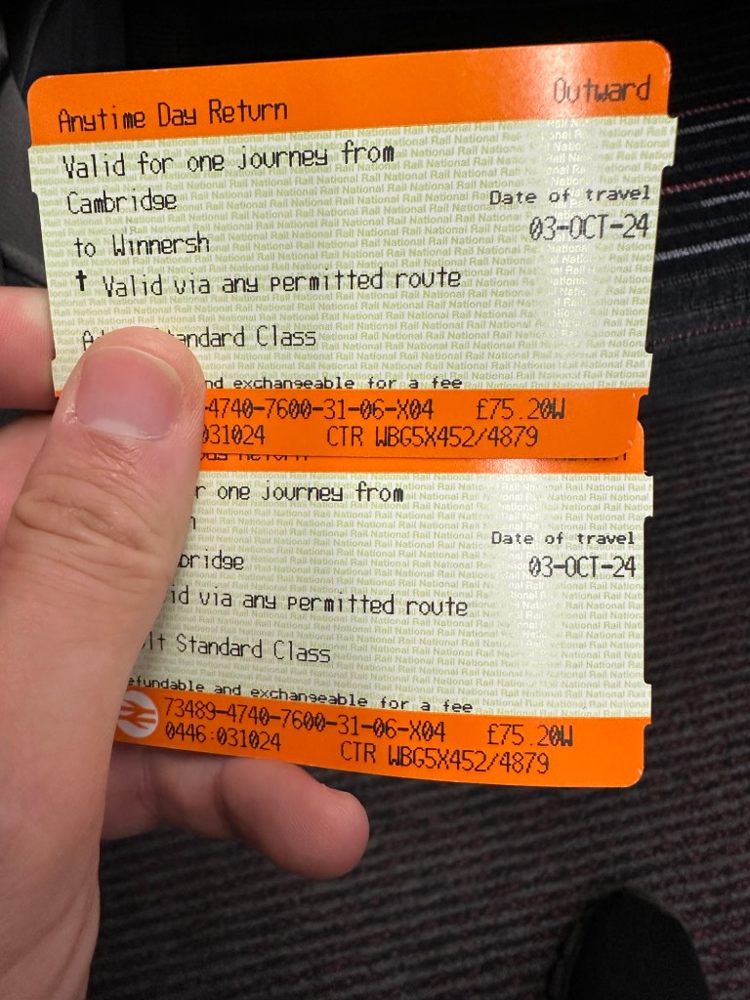

The Tale of Rich Dad and Poor Dad: My Personal Version 🌱💡Tale of Rich and Poor Dad

We’ve all heard the famous narrative of "Rich Dad, Poor Dad" from Robert Kiyosaki, with its focus on financial literacy and the differences between a "poor" mindset and a "rich" mindset. But today, I want to share my own version of this tale, reflecting on the lives of two father figures in my life—my real dad and my host dad. 🏡
For me, the story isn’t just about money or financial strategies; it’s about mindset, resilience, and the ability to learn and grow from failure. The term "Dad" here becomes a metaphor for more than just a parent—it’s about any entity that sets up an environment, provides guidance, and nurtures growth. Whether it’s your culture, your government, or your role models, each "Dad" plays a critical part in how we shape our mindset and approach to life.
The Poor Dad’s Closed Mindset 🚪🔒
A poor dad isn’t defined by his bank account but by his approach to life. My real dad, though loving and hardworking, often had a closed mindset. He viewed the world through a fixed lens, where the rules were rigid, and failure was to be feared. He believed that security meant avoiding risk, staying within comfort zones, and following well-worn paths. 😔
In this mindset, mistakes are seen as personal shortcomings rather than learning opportunities. This fragile mindset makes one prone to breaking under pressure because it doesn’t allow room for growth or adaptation. The poor dad mentality tends to cling to the familiar, often resenting change and missing out on the vast opportunities that an evolving world can offer. 🌍
The Rich Dad’s Open Mindset 🌱📈
In contrast, my host dad represented a rich dad—someone with an open mindset, willing to explore new ideas and learn from failure. He was someone who understood that growth happens at the edge of your comfort zone and that every setback is an opportunity to come back stronger. 💪
This rich dad mentality doesn’t just apply to individuals—it can also apply to governments, cultures, or even communities. A rich dad government might be one that fosters innovation, encourages risk-taking, and supports individuals through periods of growth, even if that growth involves failure along the way. 🌐 In contrast, a poor dad government might create rigid structures that prevent progress and stifle creativity.
A rich dad is antifragile—he thrives in chaos and learns from mistakes. He teaches us that leveraging failure, not debt, is what truly builds resilience. 🔄 Instead of fearing the unknown, the rich dad sees it as a space filled with potential. It’s not just about being financially wealthy but mentally wealthy—wealthy in curiosity, courage, and wisdom. 💡
Leveraging Failure, Not Debt 💥💡
Unlike Kiyosaki's view, I don't believe that leveraging debt is the path to success for everyone. Debt can be a tool for those who know how to wield it, but for many, it can become a burden. What's far more valuable is a mindset that embraces failure as part of the learning process.
A poor dad may avoid risk because he fears failure, but a rich dad knows that failure is just feedback—a stepping stone to success. The key difference between a rich and a poor mindset is not how much you make, but how much you learn. 📚
Mindset is Everything 🧠💬
The real difference between a rich dad and a poor dad is in their mindset. A rich dad isn’t just a person; it’s an approach to life. Whether it’s a culture, government, or mentor, a "rich dad" will always encourage an open mindset—one that values learning, adaptation, and growth over staying safe in a bubble.
In the end, it’s not about how much money you have in the bank; it’s about the mindset you carry through life. And that mindset? It’s the richest asset of all. 🌟
So, what kind of dad are you following—one that’s afraid to take risks, or one that embraces the journey of growth and learning? 🌱
Imported from rifaterdemsahin.com · 2024